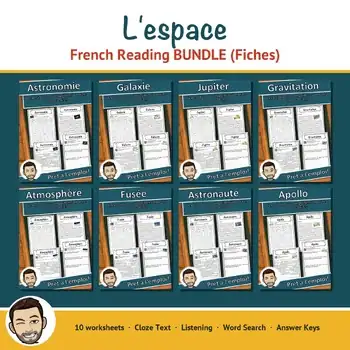
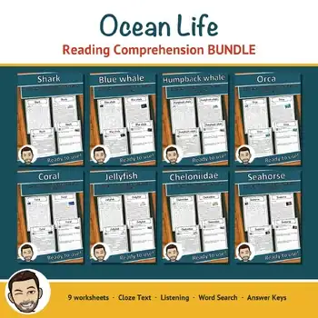
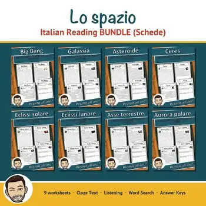
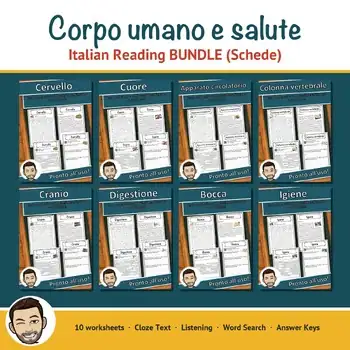
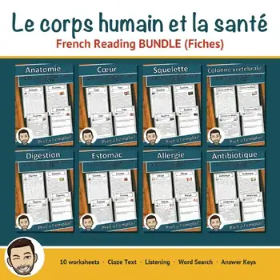
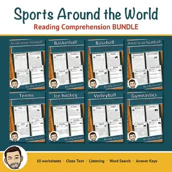
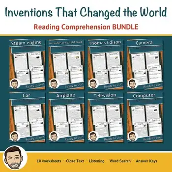
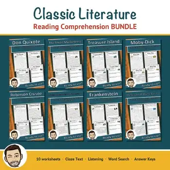

Bundles
Several resources on one topic in one download – at a lower price than buying them one by one.
90 resources
Subject
Grade

Natale e inverno – Comprensione del testo GRATIS | Italian Sampler

Noël et l'hiver – Compréhension écrite GRATUITE | French Reading Sampler

Arte antiguo y altomedieval

Natale e inverno – Italian Reading BUNDLE | Christmas & Winter Schede

Art After 1945 BUNDLE | Art History Fact Sheets with Answer Keys

Modern Art Movements BUNDLE | Art History Fact Sheets with Answer Keys

19th-Century Art Movements BUNDLE | Art History Fact Sheets with Answer Keys

Romanesque to Biedermeier Art BUNDLE | Art History Fact Sheets with Answer Keys

Histoire de France – French Reading BUNDLE | Gaul to Versailles Fiches

Human Body Reading Comprehension BUNDLE | Brain, Heart, Skeleton & More

Black History Month Reading Comprehension FREE Sampler | Cloze & Word Search

Gli animali – Italian Reading Comprehension BUNDLE | Animal Schede

Antica Roma – Italian Reading Comprehension BUNDLE | Ancient Rome Schede

Les animaux – French Reading Comprehension BUNDLE | Animal Fiches

L'espace – French Reading Comprehension BUNDLE | Space & Astronomy Fiches

La francophonie – French Reading BUNDLE | French-Speaking World Fiches

Ocean Animals Reading Comprehension BUNDLE | Sharks, Whales & Coral Reefs

World Religions Reading Comprehension BUNDLE | Judaism, Islam, Hinduism

Easter & Spring Reading Comprehension BUNDLE | Flowers, Bees & Plant Growth

Women's History Month Reading Comprehension BUNDLE | Famous Women

Valentine's Day & Kindness Reading BUNDLE | Friendship, Respect & SEL

FREE Spring Reading Comprehension Passages – Easter, Flowers & Bees | Cloze

Lo spazio – Italian Reading Comprehension BUNDLE | Space Schede

Corpo umano e salute – Italian Reading BUNDLE | Human Body Schede

Le corps humain – French Reading BUNDLE | Human Body & Health Fiches

Sports Reading Comprehension BUNDLE | Soccer, Basketball & More

Fairy Tales Reading Comprehension BUNDLE | Grimm, Andersen & Fables

Dinosaurs Reading Comprehension BUNDLE | T. Rex, Fossils & Paleontology

Inventions Reading Comprehension BUNDLE | Light Bulb, Airplane & Internet

Financial Literacy Reading Comprehension BUNDLE | Money, Banks & Inflation

Classic Literature Reading Comprehension BUNDLE | Don Quixote to Moby-Dick

Bible Stories Reading Comprehension BUNDLE | Adam and Eve to the Apostles

Age of Revolutions Reading Comprehension BUNDLE | Enlightenment to Industry

Renaissance & Reformation Reading BUNDLE | Luther, Gutenberg & da Vinci

Age of Exploration Reading Comprehension BUNDLE | Columbus & Magellan

Middle Ages Reading Comprehension BUNDLE | Knights, Castles & Vikings

Ancient Rome Reading Comprehension BUNDLE | Colosseum, Gladiators & Pompeii

Ancient Greece Reading Comprehension BUNDLE | Athens, Sparta & Greek Myths

Ancient Egypt Reading Comprehension BUNDLE | Pharaohs, Pyramids & Mummies

Ancient Mesopotamia Reading Comprehension BUNDLE | Sumerians & Cuneiform

Earth Day Reading Comprehension BUNDLE | Climate, Recycling & Pollution

Presidents' Day Reading Comprehension BUNDLE | Constitution & Government

MLK Day Reading Comprehension BUNDLE | Civil Rights & Human Rights Heroes

Black History Month Reading Comprehension BUNDLE | Jazz, Sports & Civil Rights

Noël et l'hiver – French Reading BUNDLE | Christmas & Winter Fiches

FREE Winter Reading Comprehension Passages – Snowman, Hibernation & Polar Bears

Winter Science Reading Comprehension BUNDLE | Ice, Glaciers & Polar Regions

Winter Animals Reading Comprehension BUNDLE | Hibernation & Migration
No resources found – try a different search term or filter.